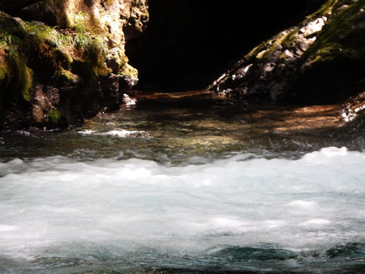
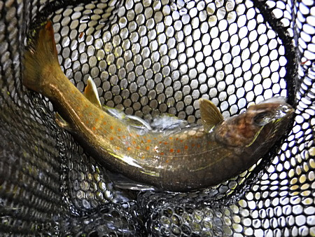
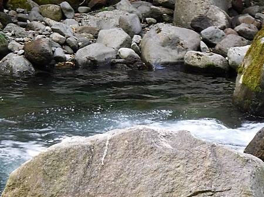
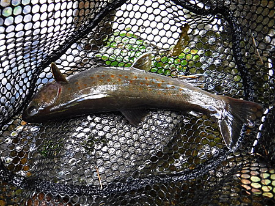
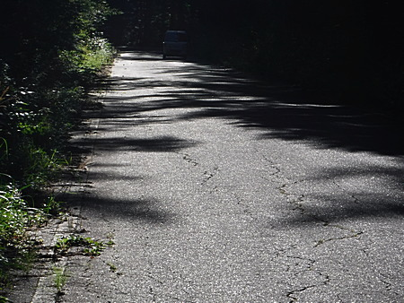

釣行日誌 故郷編
2019/09/08 ある日、森の中 ♪
今日も単独釣行。高速は快適に流れていた。サービスエリアのコンビニで昼食を購入。途中のコンビニで、入漁券を買う。
釣り場に近づいて来たら、最下流の橋が工事中で、臨時の信号が赤になっている。待ち時間はあと 100秒ほど。
『ちぇっ、早く青にならないかなぁ.....』
などと、ちょっとイライラしかけたら、右側のガードレールを越え、下の川岸からいきなり大きなツキノワグマが現れた。
「うわっ！ 本当に出た！」
でもまぁ、こちらは車の中だから、言わばサファリパーク状態であり、あまり焦ることはなく慎重にクマの動きを観察する。するとヤツはいったん信号の方へ向かってから急に引き返し、レンタカー向けて歩いて来る。いくら車の中とは言え、大型の獣が近寄ってくるのは気持ちいいモノではない。しばらく車の直前で右往左往している。
と、何を思ったのか、クマは再びガードレールを越えて、はるか下の藪の中へと消えていった。
『やっぱり、この辺には居るんだなぁ.....クマ』
クマが出た、というよりも、クマの生息域に人間が侵入した、と言う方が正しいのだから、彼らが人間に危害を与えたとしても責められない。僕が襲われるのは勘弁して欲しいけど。
思わぬハプニングの後、信号が青になったので、懲りずに「その川の上流へ」と向かう。（笑）
地図を見ながら狭い林道を登って行き、橋詰に空き地があったので、車を停めてお弁当とする。ココロが急いて、おにぎりをお茶で詰め込むようにたいらげる。
いざ、釣り支度をして入渓。しっかりクマ避けスプレーの安全装置を外し、ホルスターに入れて腰のベルトに装着した。クマ避け高音・大音量ホイッスルを吹きつつ、周辺のようすを伺いながら慎重に谷川の岸まで、藪の中を歩いて降りてゆく。
絶好の形相だが、魚影の薄いことはわかっているので、めぼしいポイントだけ狙って、早めのテンポで釣り下る。
暗がりの滝壺、奥まった三角形の淀みにミノーを打ち込んで引いて来ると初ヒット。

いかにもイワナ好みのポイント

続く小渕の対岸の淀みを狙う。

これもイワナの好みそうな暗っぽいポイント

ようし、これから釣れ始めるかな.....などと思いつつ、ふと林道の方を見上げると、崖っぷちに子グマが居た。
『うわっ！！ 最悪！！』
慌てて後ろを振り返り、母グマがいないか確認する。子グマと母グマとの間に挟まれたら、それこそ絶体絶命である。幸い、反対側に黒い生き物の姿は無かったので、恐怖に駆られながら、慌ててルアーのラインを切り、竿をバラす。リールを外して竿を袋に入れるような悠長なマネはしていられないので、とりあえず２ピースになった竿を握りしめながら、子グマから離れるためにひたすら急いで川岸を下る。
とは言え、慌てて転んで足を挫いたり、骨折でもしたら、おそらく携帯の電波が届かないこの渓谷では、かなりマズい状況に陥ることは確かである。慎重に、かつ素早く足を着く位置を選びながら、歩みを進める。
数え切れないほど好ポイントがあったが、ぜんぶ潰してバシャバシャと突っ切って来た。何と言っても、こちらの顔や頭が鋭く凶悪な爪で潰される可能性があるのだから、どうのこうのは言ってられない。
30分ほど下ってきた。もうこの辺まで来れば大丈夫か？ と、適当なところで林を突っ切って林道へ上がることにする。
クマ避けスプレーをホルスターから取り出し、利き手の左手で構え、右手には竿を握り、笹に覆われた藪に踏み込む。もちろんクマ避け笛を吹きまくりながらである。一歩踏み込む、その瞬間が一番恐ろしかった。
坂を上りながら笛を吹き続けているとかなり呼吸が困難になり、ゼイゼイと肩で息をつきながら、遅いペースで笹藪を抜けて行く。いつ茂みから母グマ、あるいは大きな雄グマが出てくるかと思うと、心臓のバクバクが倍増する。
20分ほどの藪こぎで、ようやく林道へ出た。しばらくは動けず、ハァハァと呼吸するのが精一杯。
『これで、助かった.....』
もう動けず、15分ほども休憩しただろうか？ 安堵して、クマ避けスプレーをホルスターに戻し、なんとかレンタカー目指して歩き始める。たぶんあの橋詰めまでは 2km もないだろう。

濡れたウェーディングシューズが重い。汗だくで車目指して歩き続ける。
林道を登ってくる時に見た、特徴のあるカーブを曲がる。と、まさかの黒い毛むくじゃらがそこに居た！
『うわっ！！ またかっ！』
思わず足がすくみ、その場に立ち尽くす。とてもスプレーを取り出す余裕は無い。向こうも驚いたのか、慌てて山側の藪へと逃げ込んで行った。成獣ほど大きくはなかったが、さっきの子グマでもなかった。本日の３頭目である。（笑）
ほうほうの体で車にたどり着き、後部ハッチを開けて竿を突っ込み、何はともあれ車を出す。
『あ～、ヤバかったァ.....』
普通の人ならここで家路につくところだが、誰かさんは性懲りもなく別の沢の上流へ向かう。昔、山梨ナンバーが停まっていたポイントを攻めるが無反応。
またまた懲りずに別の渓へ移動。馬小屋のポイントを攻めてみる。ウェーダーに水が入って少し脚が濡れた。半分神頼みの気分で上流の堰堤に移動し、久しぶりの夕マヅメに挑戦する。
ライズ多数あり。しかし、ルアーには反応せず。フローティングミノーをゆっくり水面近くで引いてみるが、喰い付くちびっ子イワナも居なかった。（泣） 結局、今日はクマの沢での２尾のみだった。
帰り道のファミレスで、人間の世界に戻ってきたことを実感しつつ夕食をいただき、無事帰宅。
しかし、１日に３頭もクマに遭遇してしまうとは、本当にビビった。いつかは非業の死を遂げることになりそうな気がする。とても畳やベッドの上では死ねそうにない。
また行ってみよう。（笑）
釣行日誌 故郷編 目次へ
サイトマップ
ホームへ
お問い合わせ